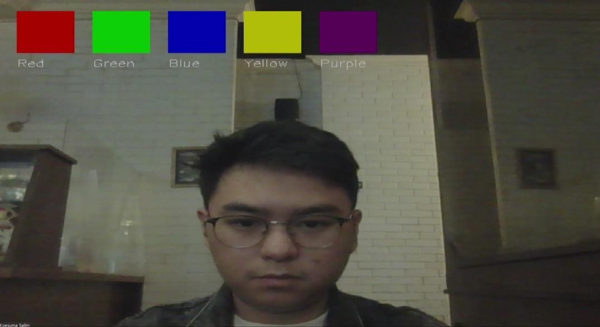
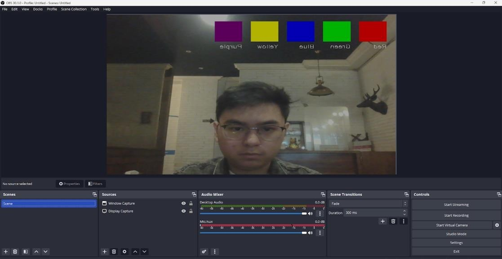
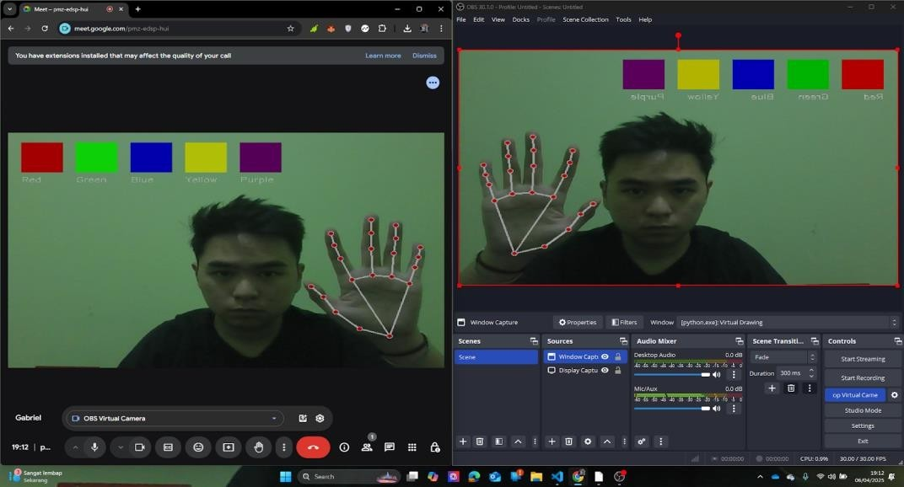
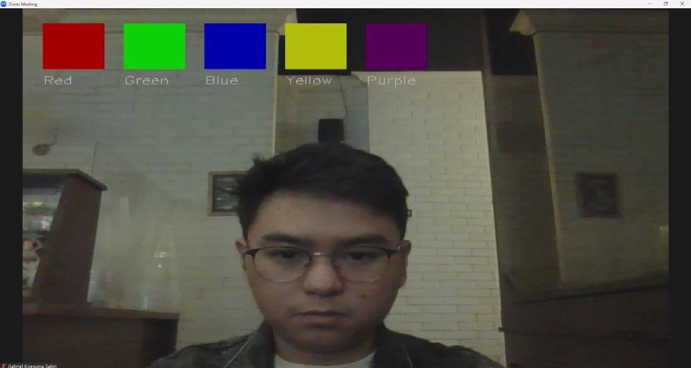
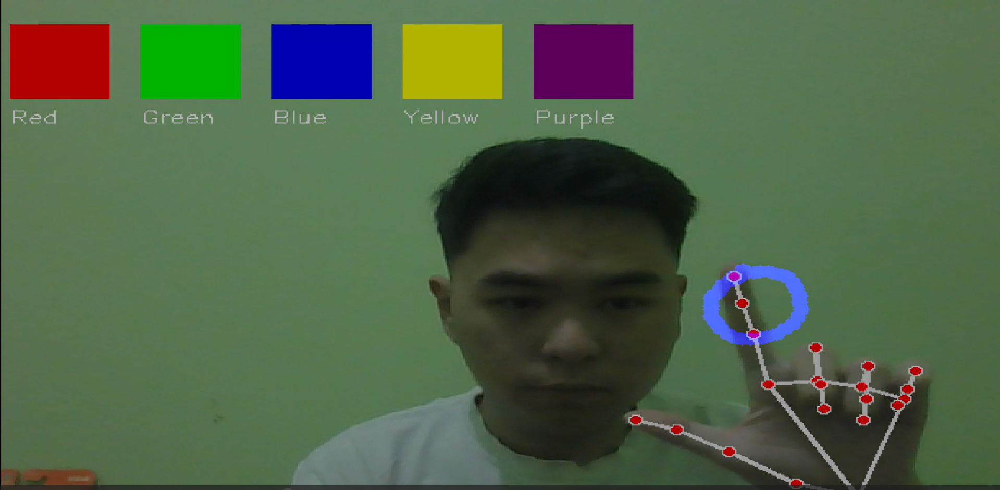

Virtual Whiteboard is a digital drawing application that uses hand gesture detection based on computer vision. Users can draw in the air using their fingers without touching the screen.
This project was developed using Python with MediaPipe to detect hand positions in real-time and OpenCV to process video input from the webcam.
The system detects the hand using MediaPipe. When the index finger is raised, the system activates drawing mode. The movement of the finger is then translated into lines on the virtual canvas.
When all fingers are open, the system will enter erase mode to delete drawings on the canvas.
Screenshot of the Virtual Whiteboard Application.

Main Interface

OBS Integration

Preview on Google Meet Platform

Preview on Zoom Meeting

Drawing With Hand Gesture